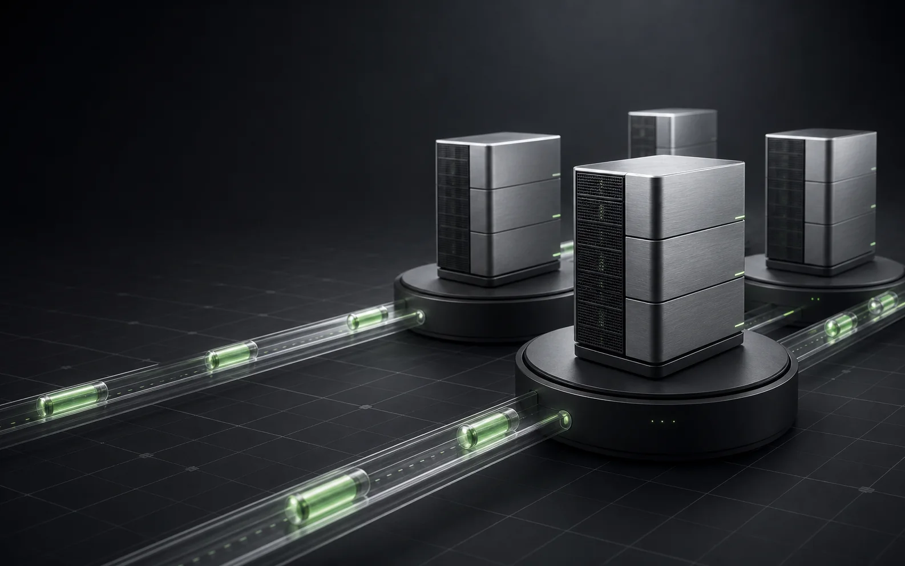
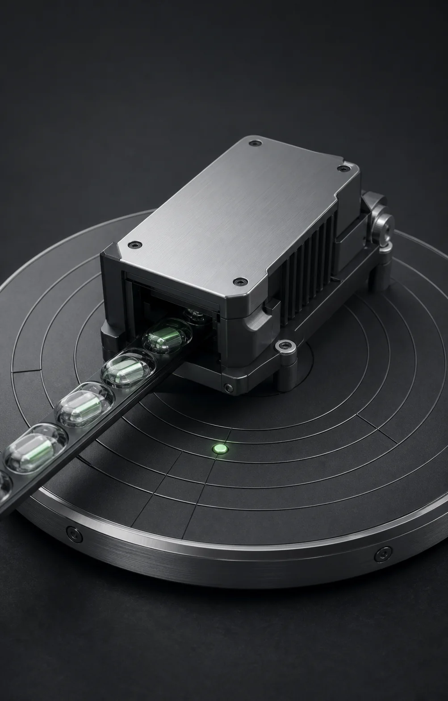

NSQ-compatible messaging for Kubernetes
Durable queues.Share nothing.
NSQ-compatible messaging with one durable PVC per Kubernetes broker and no central coordinator.

- ACK boundary
- Local fsync by default
- Delivery
- At least once
- Topology
- Share-nothing brokers
- Protocol
- NSQ V2 core
Every broker owns its queue.
Kubernetes handles placement and discovery. RustQueue keeps message ownership local, visible, and operationally direct.
Publish
NSQ producer
Existing client
Proxy or Gateway
Consumers discover every broker that owns a Topic, then connect directly over the NSQ protocol.
Read the Kubernetes runbook
Choose the acknowledgement boundary
Durability is a setting, not a footnote.
The default waits for local persistence. Two explicit relaxed modes are available when the crash-loss window is an accepted tradeoff.
- Response
- After local segment fsync
- Visibility
- Only committed data is delivered
The production default and strongest local acknowledgement contract.
- Response
- After append and write
- Visibility
- Only through the last durable position
A faster acknowledgement with an explicit unsynced crash-loss window.
- Response
- After append and write
- Visibility
- The unsynced tail is immediately consumable
The closest profile to NSQ diskqueue semantics, with weaker crash durability.
Keep the clients. Change the core.
Use official Go and Python NSQ clients across publish, consume, lookup, TLS, AUTH, and compression paths.
IDENTIFY
AUTH
SUB
PUB
MPUB
DPUB
RDY
FIN
REQ
TOUCH
NOP
CLS
Encrypted client paths with optional external AUTH.
Protocol compression without changing the client contract.
Discovery returns the real broker owners for each Topic.
A default-off gateway and discovery compatibility boundary.
Performance only matters when the durability boundary is named.
Review the NSQ comparison contract
01
Strict and relaxed profiles are reported separately.
02
Consumer runs require complete unique delivery.
03
Unexpected duplicates invalidate a benchmark result.
Start on Kubernetes
One Helm command.
Point the chart at your image and an SSD-backed RWO StorageClass. RustQueue handles the rest of the topology.
shell
helm upgrade --install rustqueue deploy/helm/rustqueue \
--namespace rustqueue --create-namespace \
--set queue.image=registry.example/rustqueue:0.8.4 \
--set queue.storageClassName=ssd-rwo